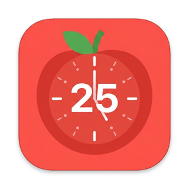

A glass timer that sits at the edge of your screen and keeps you working in focused rounds. This manual shows you how to install it, use it and make it yours.
Pomodoro splits your work into short rounds with breaks in between. The app runs the clock so you can think about the work.
You work for one session (25 minutes by default), then take a short break (5 minutes). After four sessions you get a longer break (15 minutes). That is one cycle. You can change every length in the settings.
You never need a window. After launch you will see the widget at the left edge of the screen and a clock in the menu bar. That is the whole app.
Five steps, and you only do them once per Mac.
Download the app. Open the Releases page of the project on GitHub and download Pomodoro-v1.0-macOS.zip from the latest release.
Unzip it. Double-click the zip file. You get Pomodoro.app.
Move it to Applications. Drag Pomodoro.app into the Applications folder. Starting at login works best from there.
Open it with a right-click. Right-click Pomodoro.app, choose Open, then Open again in the dialog. macOS asks this once because the app is not from the App Store.
Allow notifications. When macOS asks, click Allow. You will get a banner at the end of every session and break.
macOS says it cannot open the app? Go to System Settings › Privacy & Security, scroll down and click Open Anyway next to Pomodoro. This is normal for apps that are not signed with an Apple developer certificate.
Remove the download flag from the app. Open Terminal and paste:
xattr -dr com.apple.quarantine /Applications/Pomodoro.app
No window opens. The widget appears at the left edge of the screen, and a clock icon appears in the menu bar. If both are there, you are done.
Everything you need during work is on one small glass panel.
| Control | What it does |
|---|---|
| START | Starts the countdown from the ready state. |
| PAUSE / RESUME | Holds the clock and continues it. A pause during a work session counts as an interruption. |
| RESET | Stops the current phase and returns to READY. |
| Drag | Grab the background, ring or labels and slide the widget along its edge. The position is remembered for each edge. |
One cycle is four work sessions, each followed by a break, with a longer break at the end.
Press START. The ring fills and the status reads SESSION IN PROGRESS.
The session ends. You hear a soft chime, get a Session complete banner, and the break starts on its own. The widget turns teal.
The break ends. A second chime plays with a Break is over banner. The widget goes back to READY and waits for you.
After four sessions the break is the long one. After it, the dots reset and a new cycle begins.
Long break turned off? Set it to 0 in the settings. After the fourth session you get a normal break, and the next START begins a new cycle.
When you are not using the widget, it shrinks to a small ring with the time. Move the cursor over it and it opens again.
| State | Behaviour |
|---|---|
| Running | Collapses after 3 seconds without the cursor on it. |
| Ready to start | Collapses after 3 seconds without the cursor on it. |
| Paused | Stays open. This is a nudge to press RESUME. |
| After launch | Starts collapsed right away. It opens when you point at it. |
Prefer it always open? Turn off Compact mode in the settings. To keep only the collapsing but skip the collapsed start, turn off Start collapsed after launch.
Click the clock icon in the menu bar. A small panel opens with every option.
| Setting | What it does |
|---|---|
| Session | Length of a work session, 1 to 180 minutes. Default 25. |
| Break | Length of a normal break, 1 to 60 minutes. Default 5. |
| Long break | Length of the long break after every 4 sessions, 0 to 60 minutes in steps of 5. Default 15. Set it to 0 to turn it off. |
| Size reduction | Shrinks the widget by 0 to 50 %. Default 25 %. |
| Screen edge | Left, right, top or bottom edge. |
| Show time in menu bar | Prints the time left next to the clock icon while a phase runs. |
| Compact mode (auto-collapse) | Lets the widget shrink when you are not using it. |
| Start collapsed after launch | The widget starts as a small ring. Works only with Compact mode on. |
| Center widget on edge | Moves the widget back to the middle of the current edge. |
| Launch at login | Opens Pomodoro every time you log in to your Mac. |
| Quit Pomodoro | Closes the app. You can also press ⌘Q while the panel is open. |
Changes apply at once. In the ready state the new length shows immediately. During a session or break the new value starts with the next phase.
The panel under the settings counts your work sessions. Breaks are not counted.
| Number | What it means |
|---|---|
| Total sessions | How many work sessions were recorded. |
| Without interruption | The share of sessions you finished without pausing or resetting. |
| Average length | The average time you actually worked in a session. |
Statistics are stored only on your Mac, in this file:
~/Library/Application Support/PomodoroWidget/sessions.json
Reset statistics cannot be undone. The button asks you to click twice. After the second click the whole history is gone.
Find your problem in the left column. The fix is on the right.
| Problem | What to do |
|---|---|
| macOS will not open the app | Right-click the app and choose Open. Or use System Settings › Privacy & Security › Open Anyway. |
| I cannot see the widget | It may be collapsed to a small ring. Check the screen edge you chose, then use Screen edge and Center widget on edge in the settings. |
| There is no clock in the menu bar | A full menu bar can hide extra icons. Close a few menu bar apps, then check again. |
| No banner at the end of a session | Open System Settings › Notifications › Pomodoro and allow notifications. |
| No sound at the end of a session | Check the Mac volume and the selected output device. The sound comes from the app, not from the system notification sound. |
| The notification has a blank icon | Quit Pomodoro, keep one copy only in Applications, and run killall NotificationCenter usernoted Dock Finder in Terminal. If that is not enough, restart the Mac. |
| Launch at login does nothing | Keep the app in the Applications folder. Turn the option off and on again. |
| The timer is gone after I quit | Quitting stops the timer. It is not resumed when you open the app again. |
| Statistics look too low | A single pause marks that session as interrupted. See the Statistics section. |
| Control | Action |
|---|---|
| START | Begin a session |
| PAUSE / RESUME | Hold or continue |
| RESET | Back to READY |
| Drag | Slide along the edge |
| Hover | Open a compact widget |
| Step | What happens |
|---|---|
| 1–4 | Session, then break |
| After 4 | Long break |
| Break over | READY, waits for START |
| Setting | Value |
|---|---|
| Session | 25 min |
| Break | 5 min |
| Long break | 15 min |
| Size reduction | 25 % |
| State | Widget |
|---|---|
| Running | Collapses after 3 s |
| READY | Collapses after 3 s |
| Paused | Stays open |
| After launch | Starts collapsed |
| Action | Counted |
|---|---|
| Pause in a session | Interrupted |
| Reset in a session | Interrupted |
| Under 10 s | Ignored |
| Pause in a break | Not counted |
| Item | Where |
|---|---|
| Settings | Click the clock icon |
| Statistics | Under the settings |
| Quit | ⌘Q in the panel |
Pomodoro Timer · version 1.0 · macOS · github.com/gen-wit/macos-pomodoro